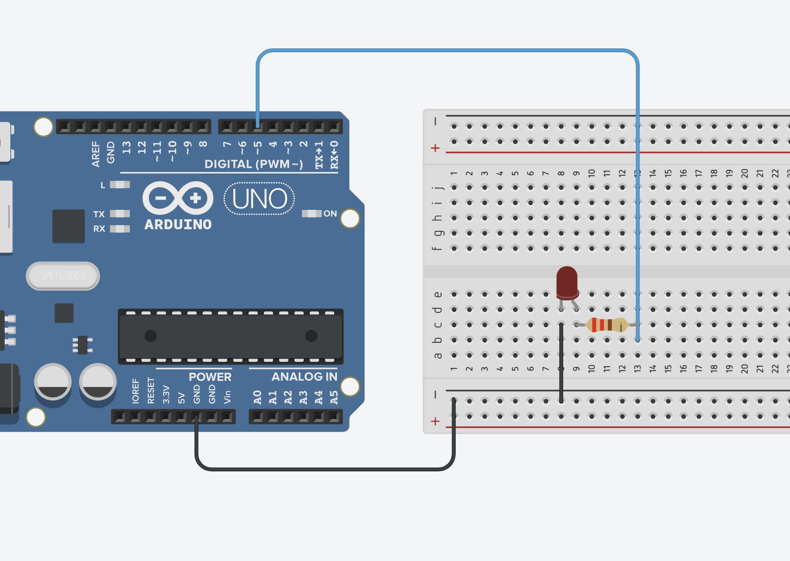

Урок 1 — Светодиод
В этом уроке ты узнаешь, как заставить светодиод мигать с помощью Arduino.
🎥 Видео урок
💻 Команды Arduino
int led = 5;
void setup() {
pinMode(5, OUTPUT);
}
void loop() {
digitalWrite(led, HIGH);
delay(1000);
digitalWrite(led, LOW);
delay(1000);
}
🧩 Макетная схема

📘 Описание
Светодиод (LED) подключается к плате Arduino Uno с помощью резистора и нескольких проводов на макетной плате. Для этого понадобятся: сама плата Arduino, светодиод, резистор на 220 Ом, макетная плата и два соединительных провода. Длинная ножка светодиода — это анод (плюс), короткая — катод (минус). Короткая ножка соединяется с одним концом резистора, а другой конец резистора подключается к выводу GND (земле) Arduino. Длинная ножка соединяется с цифровым пином 5 на плате. Таким образом, схема выглядит так: Arduino pin 5 → анод LED → катод LED → резистор → GND. Когда на пин 5 подается высокий уровень сигнала HIGH, светодиод загорается, а при низком уровне LOW — гаснет. Резистор необходим для ограничения тока, чтобы защитить светодиод от перегрузки.